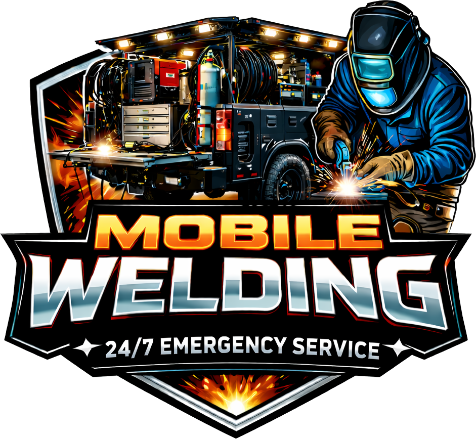

Trailers & Hitches
Cracked tongues, broken ramps, torn fenders, snapped safety-chain mounts, frame repair. Landscape, boat, equipment, and utility trailers — fixed in your driveway or yard.
Mobile Welding & Fabrication · Fairfield County, Connecticut
Broken trailer hitch. Gate sagging off its hinge. A railing the inspector flagged, or a loader bucket cracked mid-season. I'm a certified structural welder with a fully equipped rig on the truck — I pull up, fix it right, and you never load a thing onto a flatbed.
Most quotes come back same day. Send a couple of photos and I'll take it from there.

Trained at Gallatin College, Montana State University
Built signage for the Olympics
Ran structural crews on high-rise steel
100% pass rate on x-rayed structural welds
What I do
Steel and aluminum, repaired or fabricated on site. The work below is the bread and butter — but if your job isn't on the list, call anyway. Odds are I've welded something heavier.
Cracked tongues, broken ramps, torn fenders, snapped safety-chain mounts, frame repair. Landscape, boat, equipment, and utility trailers — fixed in your driveway or yard.
Sagging driveway gates, rusted-through fence posts, loose handrails, and code-compliance fixes. Clean repairs that match the existing work instead of advertising themselves.
Buckets, blades, plows, forks, mower decks, and attachment points. For landscapers and contractors, downtime is money — I come to the yard so the machine doesn't leave it.
Aluminum dock sections, ladders, davits, cleats, and railings along the Sound. Aluminum is its own animal — I carry the equipment and the certifications to do it properly.
Brackets, frames, stands, fire pits, mounts, and one-off pieces built to your measurements. Years of custom sign work means the details get sweated, not skipped.
Lally columns, beams, lintels, and load-bearing steel. This is the work I did at the highest level — inspected, x-rayed, and certified — now applied to your building.
How it works
Fill out the quote form or text a few pictures of the break. A wide shot and a close-up are usually all I need.
I'll come back — usually same day — with a price and an honest read on the fix. No mystery line items, no "we'll see when we get there."
I arrive with welder, generator, and material on board. No power needed at your site. You watch it get fixed; I clean up like I was never there.
The welder
I spent two years at Gallatin College — Montana State University in Bozeman — earning my 3G Unlimited certification in mild steel, along with 1G, 2G, 3F, and 4F fillet certifications. School was where I learned to weld. The next five years were where I learned what welding is actually for.
That training took me to Utah building custom signage — including signs for the Olympics — where every piece was on public display and every seam had to be perfect. From there I moved into structural steel and ended up running a crew on high-rise construction: directing 25-ton beams flying 800 feet in the air, then getting hoisted up to weld the connections myself. 4G and 3G mild steel, up to four inches thick, every weld x-rayed, ultrasounded, and signed off by certified weld inspectors. We had to pass at 100%. We did.
Now I'm back home in Connecticut, and I've pointed all of that at the work nobody else wants to drive to. Your trailer hitch gets the same standard the skyscraper got — because I genuinely don't know how to weld any other way.
— Ryan, owner & welder, GTL Mobile Welding
The rig
"Mobile welding" only works if the truck carries everything. Mine runs a Miller Bobcat 225 — a professional engine-driven welder and generator in one — which means I bring my own power. Driveway, beach, barn, back lot of a job site: if the truck can get near it, I can weld it there.
Service area
Based in Fairfield County and rolling to all of it. If you're a town over the line — Milford, Oxford, the Valley — call anyway. The truck doesn't mind the drive.
Questions, answered straight
Steel and aluminum are the day-to-day. My formal certifications are in mild steel — 3G Unlimited plus 1G, 2G, 3F, and 4F fillet — and I've welded aluminum professionally for years, including marine and signage work. Short version: if it's metal, it's in my wheelhouse. If you have something exotic, send a photo and I'll give you a straight answer.
No. The Miller Bobcat 225 on the truck is a welder and generator in one, so I bring my own power. All I need is room to park reasonably close to the work.
Most repairs get a fixed quote up front from your photos — you know the number before the truck moves. Larger or open-ended work is quoted hourly plus materials, and I'll tell you which one your job is right away. No surprises on the invoice; that's the whole point of quoting from photos first.
No. A broken gate hinge is a real problem if it's your gate. Small repairs are exactly how I want to earn your trust — the bigger projects tend to follow on their own.
Often, yes. If your trailer is dead on the side of a job or a railing failure is a safety issue, call rather than using the form and I'll tell you honestly how fast I can be there.
For five years, every structural weld I made was x-rayed, ultrasound-tested, and signed off by certified weld inspectors at a 100% pass standard. Nobody x-rays a trailer hitch — but the welder doesn't change when the inspector goes home. If a weld of mine ever fails, I come back and make it right.
Request a quote
A few details and a couple of photos are all it takes. I read every request myself and most quotes go out the same day.